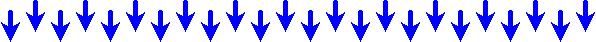

>THE SOURCES LIST
This is a mostly extensive list on information that I had gathered regarding each of the chapters in this essay. There's a lot more to gleem from them than just from my words, so use these as the starting points to your own research rather than only as the sources.
#THE INTERNET IS ABOUT 34 YEARS OLD
- Baricco, A. (2020). The Game: A Digital Turning Point (C. Botsford, Trans.). McSweeney's.
- Berners-Lee, T. (n.d.). Answers for young people - Tim Berners-Lee. W3C. https://www.w3.org/People/Berners-Lee/Kids.html
- Berners-Lee, T. (n.d.). Frequently asked questions by the Press - Tim BL. W3C. https://www.w3.org/People/Berners-Lee/FAQ.html
- The Expanding Consolidation of the Consumer Internet. (2016, April 20). ncta.com. https://www.ncta.com/whats-new/the-expanding-consolidation-of-the-consumer-internet-3
#“It’s nice that we had 15 years of usable internet before it devolved into a giant ad that’s not even good at selling you the stuff you need or want”
- Nicodelort. (2024, February 29). X.com. nico🏳️🌈 on X: "it's nice that we had about 15 years of usable internet before it devolved into a giant ad that's not even good at selling you the stuff you need or want". https://twitter.com/nicodelort/status/1763265439080042852
- Terra, J. (2023, October 16). What is Web 1.0, Web 2.0, and Web 3.0? Definitions, Differences & Similarities. Simplilearn.com. https://www.simplilearn.com/what-is-web-1-0-web-2-0-and-web-3-0-with-their-difference-article
- Choudhury, N. (2014). World Wide Web and Its Journey from Web 1.0 to Web 4.0. International Journal of Computer Science and Information Technologies, Vol.5 (6), 8096-8099. https://ijcsit.com/docs/Volume%205/vol5issue06/ijcsit20140506265.pdf
- Aced Toledano, C. (2013). Web 2.0: the origin of the word that has changed the way we understand public relations. https://www.researchgate.net/profile/Cristina-Aced-2/publication/266672416_Web_20_the_origin_of_the_word_that_has_changed_the_way_we_understand_public_relations/links/5785f8a108ae3949cf552cf6/Web-20-the-origin-of-the-word-that-has-changed-the-way-we-unders
- O'Reilly, T. (2006, December 10). Web 2.0 Compact Definition: Trying Again. O'Reilly Radar. http://radar.oreilly.com/archives/2006/12/web-20-compact-definition-tryi.html
- Aced Toledano, C. (2013). Web 2.0: the origin of the word that has changed the way we understand public relations. https://www.researchgate.net/profile/Cristina-Aced-2/publication/266672416_Web_20_the_origin_of_the_word_that_has_changed_the_way_we_understand_public_relations/links/5785f8a108ae3949cf552cf6/Web-20-the-origin-of-the-word-that-has-changed-the-way-we-unders
- DiNucci, D. (1999). Fragmanted Future. Print, Vol.53, 32. http://darcyd.com/fragmented_future.pdf
- Varoufakis, Y. (2024). Technofeudalism: What Killed Capitalism. Melville House.
#SIDE CONTENT: How it’s still capitalism aka "Web3".
- Kaur, G. (2023, May 31). What is cryptocurrency? A beginner's guide to digital currency. Cointelegraph. https://cointelegraph.com/learn/what-is-a-cryptocurrency-a-beginners-guide-to-digital-money
- Diehl, S. (n.d.).The Case Against Crypto. Stephen Diehl. https://www.stephendiehl.com/blog/against-crypto.html
- Goldman, J. (2022, September 19). YouTube tests users' tolerance for increased ad loads. eMarketer. https://www.emarketer.com/content/catherine
#SIDE CONTENT: Now it’s about us and the internet.
- Love, S. (2024, January 25). When we can share everything online, what counts as oversharing? The Guardian. https://www.theguardian.com/wellness/2024/jan/25/oversharing-social-media-privacy-anxiety
- Shabahang, R., Shim, H., Aruguete, M. S., & Zsila, Á. (2022, August 22). Oversharing on Social Media: Anxiety, Attention-Seeking, and Social Media Addiction Predict the Breadth and Depth of Sharing. PubMed. https://pubmed.ncbi.nlm.nih.gov/35993372/
- Bleach World. (2021, May 18). The Internet is Dead. Bleach World. https://bl-world.neocities.org/writings/blog1
- Aranda, J., Vidokle, A., & Wood, B. K. (Eds.). (2015).The Internet Does Not Exist. MIT Press. https://www.e-flux.com/books/66665/the-internet-does-not-exist/ PDF
#”IT’S REVIVED!”: THE WEB REVIVAL MOVEMENT
- Murray, D. (Melon) (2023, November 10). web_revival. MelonLand Wiki. https://wiki.melonland.net/web_revival
- Murray, D. (Melon) (2023, September 20). Intro to the Web Revival #1: What is the Web Revival? Melon's Thoughts. https://thoughts.melonking.net/guides/introduction-to-the-web-revival-1-what-is-the-web-revival
- Reclaiming The Internet. (n.d.). The Yesterweb - Reclaiming the Internet. https://yesterweb.org/
- Web Revival Glossary. (n.d.). Web Revival Guide - Glossary. https://whiteheartrainbowsoul.neocities.org/web_revival_guide/glossary
- Jackson, J. (n.d.). I'm a fucking webmaster. Justin Jackson. https://justinjackson.ca/webmaster/
- evergreen. (n.d.). manifesto - evergreen. Evergreen. https://itsevergreen.rip/manifesto/